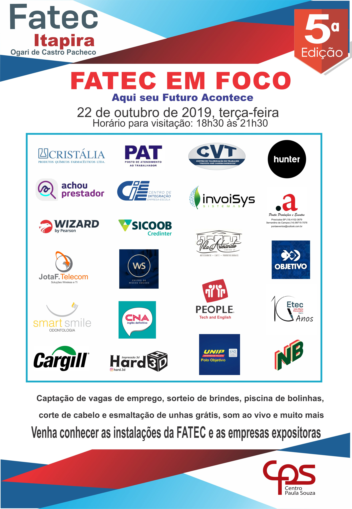

5ª FATEC EM FOCO - AQUI SEU FUTURO ACONTECE
Atualizado: 15/09/2019
EVENTO:
A idealização do “Fatec em Foco – Aqui seu futuro acontece” ocorreu há cinco anos com a proposta de estreitar os laços entre a sociedade e a comunidade acadêmica da faculdade. A programação prevê a divulgação dos cursos e projetos desenvolvidos pelos estudantes além da exposição de produtos e serviços das empresas parceiras. Ao visitar os estandes, os participantes têm a oportunidade de conhecer melhor o ramo de atuação das empresas, firmar parcerias, contratar serviços e até mesmo se candidatar as vagas de empregos.
PROGRAMAÇÃO 2019:
Palestra: “Como melhorar o seu currículo” – 19h30
Julio Brandine (Diretor Executivo da invoiSys) e Raphael Colferai (Ex-gerente Sr. da Thomson Reuters, em Campinas-SP)
Evento aberto ao público (Vagas limitadas) - Inscrições
Show
Diogo Sena
Hud Henrique
Praça de Alimentação
Alex Fião (lanches, pastel e salgados)
Nômade Café
Atrações
Piscina de bolinhas para a garotada
Campeonato de Yu-Gi-Oh!
Campeonato de vídeo game
Sorteio de brindes
Distribuição de mudas de hortaliças (se possível traga o recipiente para levar sua mudinha para casa já plantada)
Corte de cabelo e esmaltação de unhas
Aferição de pressão e muito mais!!!